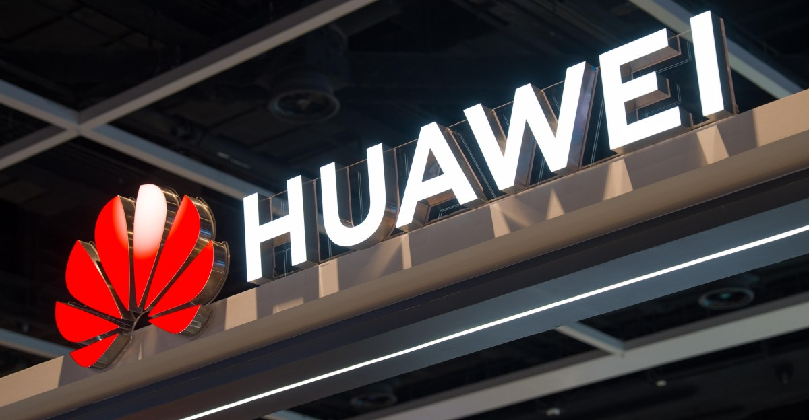

Technology · 25 Nov 2026
Huawei found guilty of stealing trade secrets

A jury has found Huawei guilty of stealing US trade secrets, as reported earlier by NBC News and Bloomberg. The verdict, handed down in a federal court in New York, concludes a years-long legal battle that accused the Chinese telecom giant of stealing source code and proprietary technology from seve
Multiple independent publishers are reporting on the same development: Huawei found guilty of stealing trade secrets.
The available reports place the development in the Technology category. The accounts were compared for agreement on the central event rather than simply shared names or broad topics.
One of the available reports describes the development this way: A jury has found Huawei guilty of stealing US trade secrets, as reported earlier by NBC News and Bloomberg. The verdict, handed down in a federal court in New York, concludes a years-long legal battle that accused the Chinese telecom giant of stealing source code and proprietary technology from several companies, including T-Mobile, Cisco, and […]
Readers should consult the linked source reports for additional context, updates and details that may change as the story develops.
Sources
This article was produced by the C. O. Eric AI Newsroom from the cited sources. It is published only after automated evidence and safety checks.